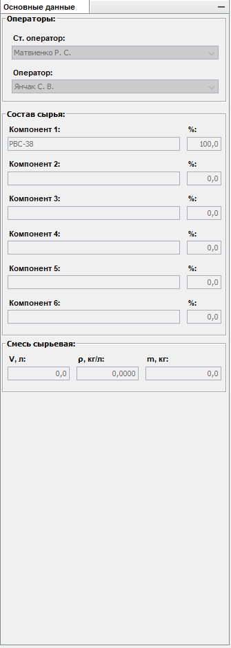
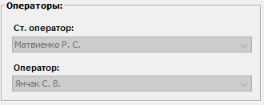
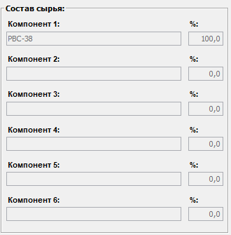
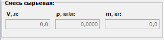

Описание области "Основные данные"
Внешний вид области основных данных:

Область основных данных предназначена для ввода и изменения информации:
- Об операторах
- О составе сырья на переработку
- О параметрах сырьевой смеси
Выбор старшего оператора и оператора смены осуществляется при помощи соответствующих выпадающих списков:

Состав сырья заполняется в соответствующих полях ввода - наименование компонента сырья и его процентное содержание:

Количество сырьевой смеси - объем и плотность, заполняются в соответствующих полях ввода:

Причем, требуется ввести только объем и плотность. Масса сырьевой смеси будет вычислена автоматически.